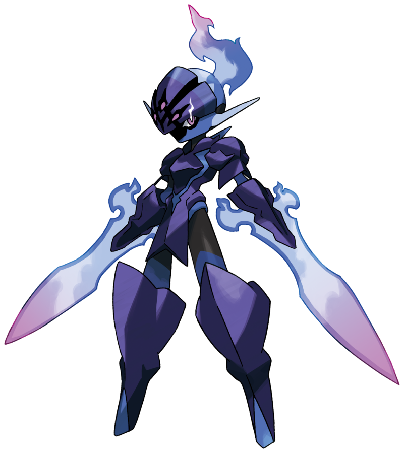
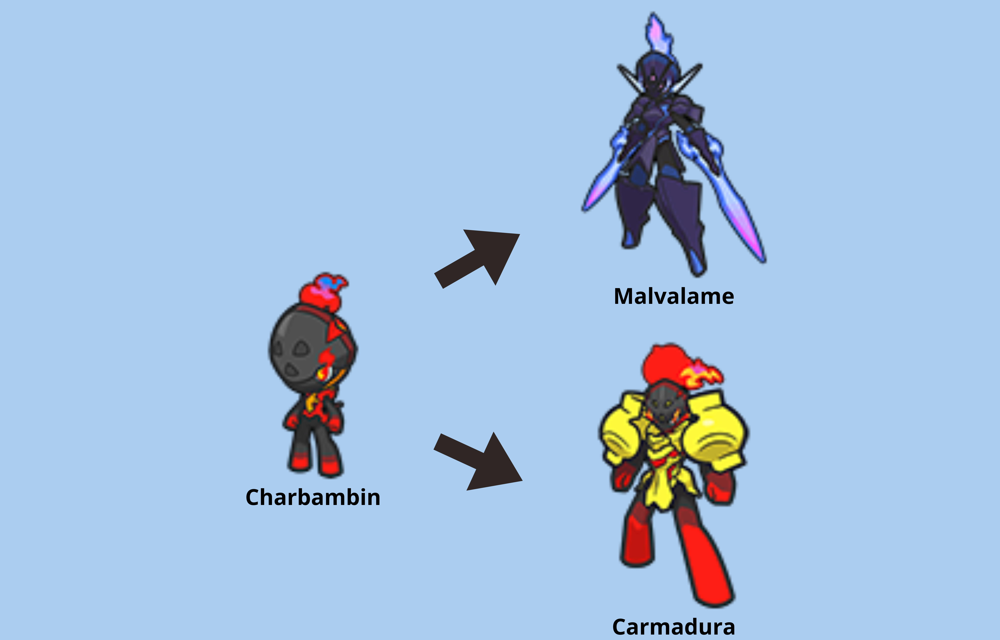

Informations:
Numéro du Pokedex national: 937
Génération: 9ème
Type: 

Cri:

Description :
Malvalame est habité par la rancœur d’une âme guerrière qui a péri avant de pouvoir accomplir son but. Il a évolué grâce à une ancienne armure imprégnée de cette énergie, qui alimente les flammes de ses épées. D’une loyauté absolue envers son Dresseur ou sa Dresseuse, il combat sans hésitation et lacère impitoyablement quiconque représente une menace.
Malvalame est habité par la rancœur d’une âme guerrière qui a péri avant de pouvoir accomplir son but. Il a évolué grâce à une ancienne armure imprégnée de cette énergie, qui alimente les flammes de ses épées. D’une loyauté absolue envers son Dresseur ou sa Dresseuse, il combat sans hésitation et lacère impitoyablement quiconque représente une menace.
– Vidéo promotionnelle
